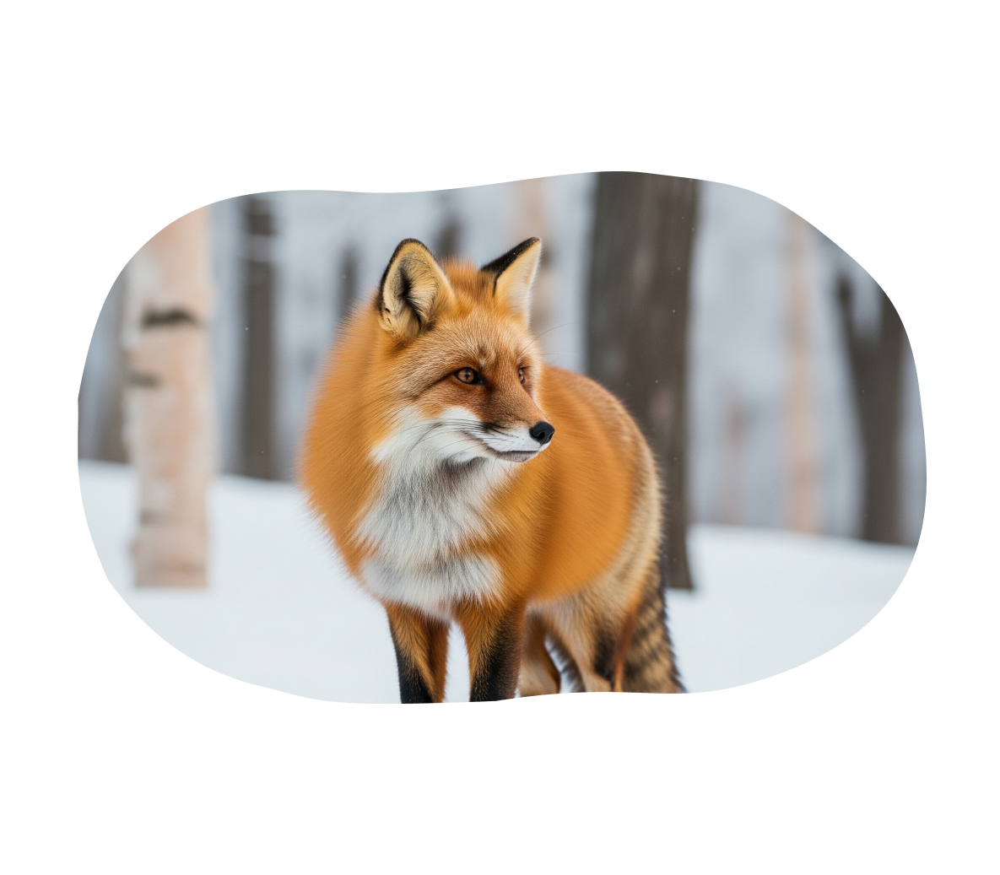

更多內容
北海道｜北狐（キタキツネ）
在銀白雪原與翠綠森林之間，一抹金黃靈巧地掠過——那就是 北海道的精靈，北狐（キタキツネ）！
北狐，是日本特有亞種的紅狐，擁有一身閃耀著陽光光澤的橘 紅毛皮，尾巴又蓬又長，像是一把優雅的羽扇。牠們的身影常 常出現在北海道的田野、山林，甚至偶爾會悄悄走進小鎮，像 是來和人類打聲招呼。
更多內容


在銀白雪原與翠綠森林之間，一抹金黃靈巧地掠過——那就是 北海道的精靈，北狐（キタキツネ）！
北狐，是日本特有亞種的紅狐，擁有一身閃耀著陽光光澤的橘 紅毛皮，尾巴又蓬又長，像是一把優雅的羽扇。牠們的身影常 常出現在北海道的田野、山林，甚至偶爾會悄悄走進小鎮，像 是來和人類打聲招呼。
誰說企鵝只能在南極搖搖擺擺？來到宮城，你就有 機會近距離遇見這些穿著「小禮服」的冰雪萌主！
在宮城縣的水族館與動物設施中，企鵝們可是人氣 王。不論是優雅滑行於水中，還是在陸地上一邊晃 來晃去、一邊發出呱呱叫聲，牠們總是讓人一見傾 心。尤其是餵食時間，企鵝們會像小火箭一樣衝向 飼育員，整場畫面熱鬧得像開派對！
走進奈良公園，就像踏入了一座鹿的王國。這裡的主角不是人 類，而是一群優雅又有點調皮的梅花鹿（シカ）！
這些自由自在穿梭在人群中的小鹿，是奈良最知名的吉祥象徵 。牠們身上的白點像是灑落在毛皮上的櫻花瓣，可愛到讓人忍 不住一秒掏出相機瘋狂拍照！
想像一下，一群猴子坐在熱呼呼的溫泉裡泡澡，臉 上還露出享受的表情——沒錯，這不是動畫情節， 而是真實存在於日本的奇景！主角就是超人氣的 「日本獼猴（ニホンザル）」！
牠們是世界上最北棲息的靈長類之一，也是唯一會 泡溫泉的猴子。冬天造訪長野地獄谷野猿公苑，你 會看到這些臉紅紅的獼猴，一邊泡湯一邊放空，彷 彿在說：「啊～這才是人生！」
喵～你知道日本也有「喵星人治國」的島嶼嗎？來到廣島的「貓島」，你將進入一個人類只是客人，貓咪才是主角的夢幻國度！
這裡指的是廣島縣的「相島（おうしま）」或「大久野島」等地——島上居民數量遠少於貓，牠們悠哉地走在街上、窗邊、港口邊，哪裡有陽光，哪裡就有牠們懶洋洋地打滾、伸懶腰的身影。
在沖繩群島最西邊的西表島，有一位神秘又低調的 島主——牠就是傳說中的「西表山貓（イリオモテ ヤマネコ）」！
這位「日本最難一見的貓界忍者」，體型不大，卻 有著野性十足的斑紋毛皮和渾圓有神的夜視眼。牠 們是日本特有、極度瀕危的野生貓科動物，全世界 僅存不到200隻，是動物界的「超級稀有寶」。